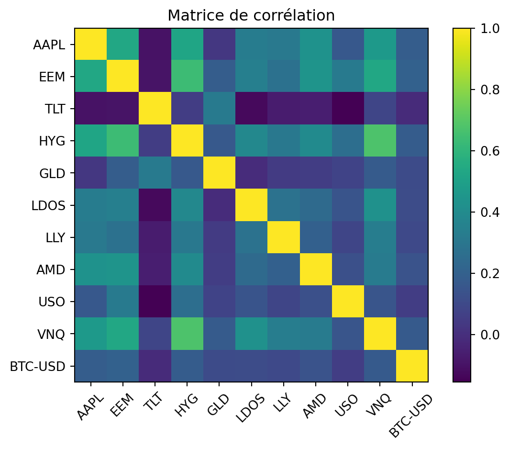
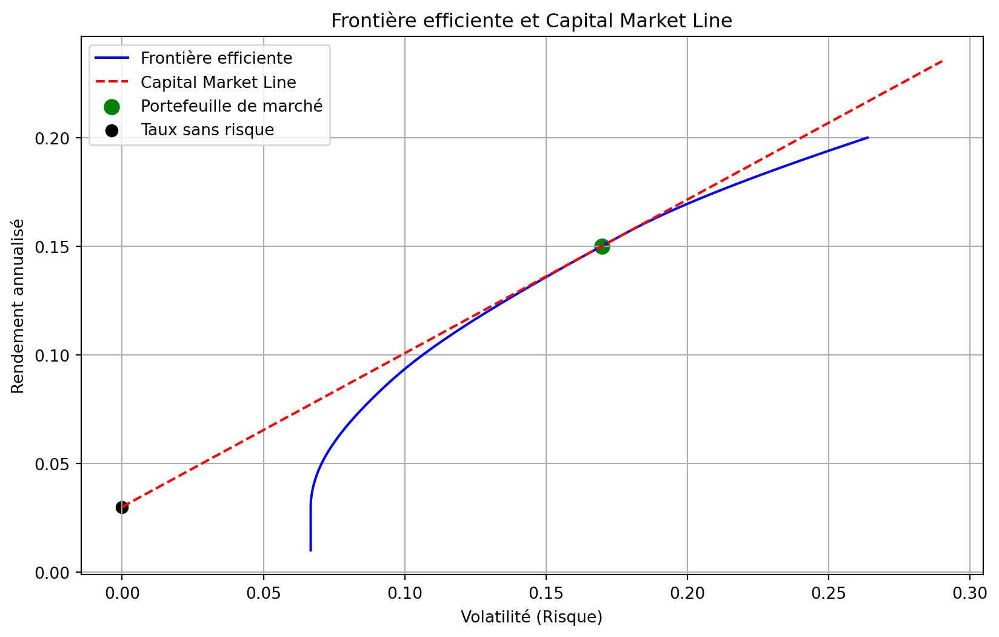

Code
import yfinance as yf
import pandas as pd
import numpy as np
from scipy.optimize import minimize
import matplotlib.pyplot as pltKOUGOUM Marilene
Dans ce travail, nous présentons le modèle de Markowitz pour l’optimisation de portefeuille.
L’idée centrale est la suivante : un investisseur ne regarde pas seulement le rendement espéré, mais aussi le risque associé à ce rendement.
Dans le cadre de Markowitz :
L’objectif du modèle est de trouver des combinaisons de poids sur un ensemble d’actifs qui offrent le meilleur compromis rendement / risque.
On parle alors de frontière efficiente : l’ensemble des portefeuilles qui, pour un niveau de risque donné, offrent le rendement le plus élevé possible (ou, pour un rendement donné, minimisent le risque).
Dans ce TP, nous allons :
Les log-rendements sont définis par :
\[ R_{t} = \ln\left(\frac{S_t}{S_{t-1}}\right). \]
| AAPL | EEM | TLT | HYG | GLD | LDOS | LLY | AMD | USO | VNQ | BTC-USD | |
|---|---|---|---|---|---|---|---|---|---|---|---|
| Date | |||||||||||
| 2015-01-06 | 0.000094 | -0.004211 | 0.017857 | -0.003837 | 0.011334 | -0.001886 | 0.005033 | -0.011342 | -0.040179 | 0.009870 | 0.041796 |
| 2015-01-07 | 0.013925 | 0.021394 | -0.001977 | 0.006200 | -0.005909 | 0.016150 | -0.007053 | -0.019195 | 0.017573 | 0.015214 | 0.028073 |
| 2015-01-08 | 0.037703 | 0.016893 | -0.013331 | 0.007502 | -0.004217 | 0.002782 | 0.023413 | 0.011561 | 0.009751 | 0.003769 | -0.038046 |
| 2015-01-09 | 0.001072 | -0.003305 | 0.010893 | 0.005007 | 0.011321 | -0.019168 | -0.013353 | 0.007634 | -0.014662 | 0.000470 | 0.024607 |
| 2015-01-13 | 0.008840 | 0.008692 | 0.000000 | 0.000000 | -0.003379 | 0.023666 | -0.000576 | 0.011342 | 0.011990 | -0.001516 | -0.170306 |

On résout :
\[ \min_w \; w^T \Sigma w \]
sous la contrainte:
\[ \sum_i w_i = 1, \qquad w_i \ge 0, \qquad w^T \mu \ge \mu_{ ext{target}}. \]
La frontière efficiente représente l’ensemble des portefeuilles optimaux au sens de Markowitz :
pour un niveau de risque donné, ils offrent le rendement espéré maximal, et pour un rendement donné, ils offrent le risque minimal.
Les portefeuilles qui ne satisfont pas ce compromis optimal se trouvent en dessous de la frontière et sont donc inefficients.
Lorsqu’un actif sans risque rémunéré au taux \(\( r_f \)\) est disponible, l’investisseur peut combiner :
Le portefeuille de marché est alors le portefeuille risqué qui maximise le ratio de Sharpe.
Il est tangent à la frontière efficiente.
Le ratio de Sharpe mesure combien de rendement supplémentaire un portefeuille génère pour chaque unité de risque prise.
Il compare :
\[ \mu_p - r_f, \]
\[ \sigma_p. \]
Le ratio s’écrit donc :
\[ \text{Sharpe}(w) = \frac{\mu_p - r_f}{\sigma_p}. \]
La Capital Market Line (CML) décrit l’ensemble des portefeuilles optimaux dans un marché où un actif sans risque existe.
Elle relie :
Son équation est :
\[ \mu = r_f + \frac{\mu_M - r_f}{\sigma_M}\,\sigma. \]
où :
Les portefeuilles sur la CML sont strictement dominants :
ils offrent le meilleur rendement possible pour un niveau de risque donné.
La frontière efficiente représente la limite optimale sans actif sans risque,
tandis que la CML représente les portefeuilles optimaux avec actif sans risque.
Le portefeuille de marché est le portefeuille risqué que l’investisseur rationnel retient dans ce cadre.
def efficient_portfolio(mu_target, range_=(-0.1, None)):
init_weights = np.ones(n_assets) / n_assets
constraints = [
{'type': 'eq', 'fun': weight_sum_constraint},
{'type': 'ineq', 'fun': lambda w: target_return_constraint(w, mu_target)}
]
bounds = [range_ for _ in range(n_assets)]
result = minimize(portfolio_variance, init_weights, bounds=bounds, method='SLSQP', constraints=constraints)
if result.success:
opt_w = result.x
return np.sqrt(portfolio_variance(opt_w)), opt_w
return None, None
rf = 0.03
mu_targets = np.linspace(0.01, 0.2, 100)
front_vol = []
front_returns = []
for mu_t in mu_targets:
vol, w = efficient_portfolio(mu_t)
if vol:
front_vol.append(vol)
front_returns.append(mu_t)
sharpe = (np.array(front_returns)-rf)/np.array(front_vol)
idx = np.argmax(sharpe)
market_vol = front_vol[idx]
market_ret = front_returns[idx]
market_weights = efficient_portfolio(market_ret)[1]
sigma_line = np.linspace(0, max(front_vol)*1.1, 200)
cml_line = rf + (market_ret-rf)/market_vol * sigma_lineplt.figure(figsize=(10,6))
plt.plot(front_vol, front_returns, label="Frontière efficiente", color="blue")
plt.plot(sigma_line, cml_line, label="Capital Market Line", color="red", linestyle="--")
plt.scatter([market_vol], [market_ret], color="green", label="Portefeuille de marché", s=80)
plt.scatter([0], [rf], color="black", label="Taux sans risque", s=50)
plt.xlabel("Volatilité (Risque)")
plt.ylabel("Rendement annualisé")
plt.title("Frontière efficiente et Capital Market Line")
plt.legend()
plt.grid()
plt.show()
print("Portefeuille du marché :")
print("Volatilité :", market_vol)
print("Rendement :", market_ret)
print("Poids :", market_weights)
Portefeuille du marché :
Volatilité : 0.16980705756260528
Rendement : 0.1501010101010101
Poids : [ 0.23451212 -0.1 -0.1 -0.0127845 0.6130599 0.18371141
0.26959167 0.0338122 -0.1 -0.1 0.0780972 ]Ce TP construit :
Il s’agit ici d’un modèle statique :
Cependant, dans le monde réel :
Pour modéliser ces situations, on devra passer à un cadre dynamique, où les poids du portefeuille deviennent un processus qui évolue au cours du temps.
Cela nous conduira naturellement aux problèmes de contrôle optimal (en temps discret ou continu),
que nous étudierons dans les prochains TDs.